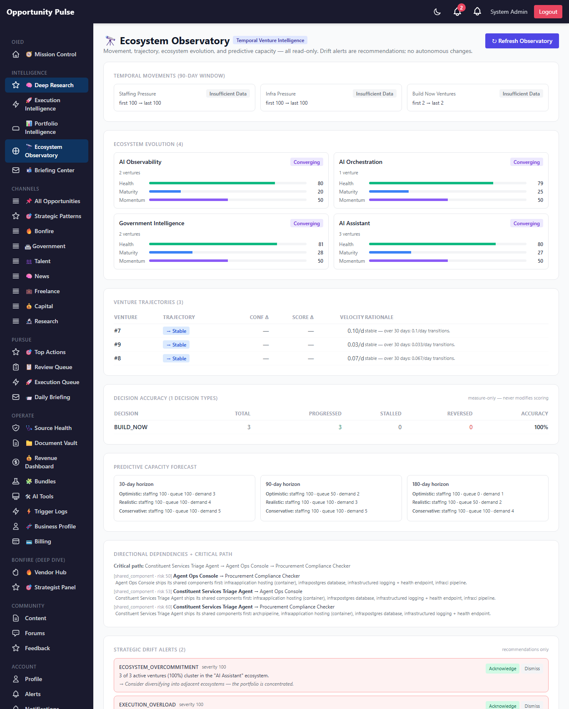
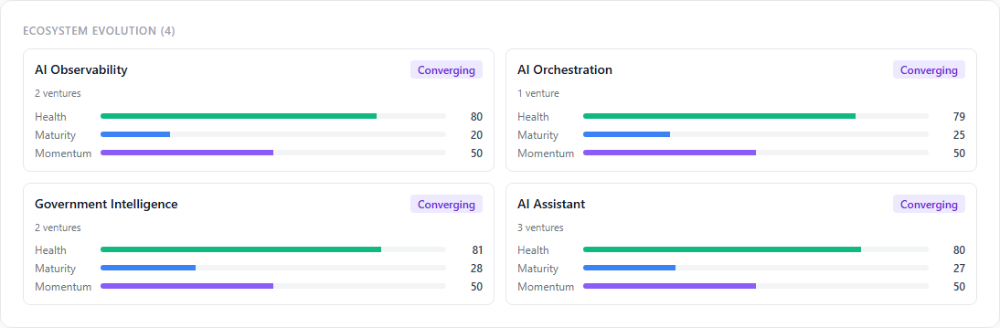

Deep Research Intelligence Engine — Phase 5
Temporal + Ecosystem Intelligence · 2026-05-15 · commit 8f32b97 · all 1,785 backend tests passing
Phase 4 made the portfolio answer "should this venture consume capacity right now?" — but only at a point in time. Phase 5 adds temporal reasoning: trends, trajectories, ecosystem evolution, directional dependencies + critical-path analysis, predictive capacity forecasting, decision-accuracy measurement, and strategic-drift detection — all wired into one new dashboard, the Ecosystem Observatory.
On the seeded prod run the observatory captured 8 signal-history points, classified 4
ecosystems (all converging, correctly — the seeded ventures span multiple
templates), computed 3 venture trajectories, auto-proposed 3 directional dependency edges from
the existing overlap pairs, generated 9 predictive-capacity forecasts (3 horizons × 3 scenarios),
and emitted 2 drift alerts: ecosystem_overcommitment + execution_overload
— exactly the signal Phase 5 is built to surface.
8 tables live 10 services all deterministic human-in-the-loop preserved
The Phase 5 objective
Phase 4's portfolio dashboard answered current-state questions. Phase 5 answers questions only time can answer:
- Is this venture strengthening or weakening?
- Which ecosystem is accelerating? Which is dying?
- How accurate have our build-vs-monitor decisions actually been?
- Where will capacity pressure be in 30 / 90 / 180 days?
- What's blocking what, in actual order?
- Is the portfolio drifting from strategy?
Every answer is a deterministic computation over existing time-series tables + the new Phase 5 snapshot tables. No AI. No autonomous changes. Drift alerts surface for human acknowledgment.
What shipped
| # | Capability | Delivered |
|---|---|---|
| 1 | Temporal Intelligence Engine | temporalIntelligence.service — generic metric time series + 6-class movement classification |
| 2 | Historical Portfolio Analytics | historicalPortfolio.service — capacity timeline, venture velocity, readiness aging, confidence trend, ranking trend |
| 3 | Ecosystem Evolution Tracking | ecosystemEvolution.service — per-ecosystem health/maturity/momentum + 6-class classification |
| 4 | Venture Trajectory Intelligence | ventureTrajectory.service — per-venture trajectory classification from history |
| 5 | Decision Accuracy Analytics | decisionAccuracy.service — measure-only; lifecycle progression vs decision recommendation |
| 6 | Directional Dependency Intelligence | ventureDependency.service upgraded — directional edges + critical path + bottleneck identification |
| 7 | Predictive Capacity Forecasting | predictiveCapacity.service — 30/90/180-day forecasts × 3 scenarios |
| 8 | Strategic Drift Detection | strategicDrift.service — 5 deterministic checks → drift_alerts as recommendations |
| 9 | Historical Signal Timelines | signalHistory.service — per-signal time series for charting |
| 10 | Ecosystem Observatory Dashboard | /admin/deep-research/observatory — all engines surfaced as one read view |
Temporal intelligence engine
Deterministic. Captures any metric into temporal_snapshots (generic key/value
timeline) and answers "is this strengthening or weakening?" by computing deltas across a
configurable lookback window. Classifications: accelerating /
strengthening / stable / weakening /
decelerating / insufficient_data. Thresholds env-overridable.
deterministic
Historical portfolio analytics
Deterministic. Reads the time-series tables Phases 3 + 4 already populate (confidence_history, resource_capacity_snapshots, venture_lifecycle_events, portfolio_scores) and assembles capacity-over-time, venture velocity by day, readiness aging, confidence trends, and portfolio ranking changes across runs. No new computation — pure aggregation.
Ecosystem evolution tracking
Deterministic. Uses Phase 4 venture_templates as ecosystem keys. For each
ecosystem with matching ventures:
- health_score — average execution readiness across matching ventures.
- maturity_score — average lifecycle progress (an explicit lookup table maps lifecycle states to 0-100 progress).
- momentum_score — mean confidence delta over a window, mapped to 0-100.
Classification:
emerging / accelerating / saturated /
declining / dying / converging (when 60%+ of an
ecosystem's ventures are also tagged by another ecosystem). Persisted to
ecosystem_metrics over time, so the trend is itself plottable.
Venture trajectory intelligence
Deterministic. For each venture, computes deltas over the window:
- confidence delta from
confidence_history - portfolio score delta from
portfolio_scores - lifecycle velocity (transitions per day) from
venture_lifecycle_events
Classifies into strengthening / accelerating / stable /
weakening / stagnating / unknown. Stagnating fires only
when a venture has had zero movement AND zero lifecycle transitions for the entire window — a
real "stuck" signal, not just a quiet week.
Decision accuracy analytics
Deterministic. Measure-only — never modifies scoring. For each decision class (BUILD_NOW / BUILD_SOON / MONITOR / etc.), buckets recently-assessed ventures + classifies how each one actually played out:
progressed— moved forward in the lifecycle.stalled— no movement.reversed— moved backward, or got archived. Archived is always reversed (it shows up at the end of the lifecycle index but going to it is failure, not progress).
Then asks "was the decision correct?" — BUILD_NOW is correct when progressed; MONITOR is correct when NOT progressed; HIGH_RISK / OVERSATURATED is correct when stalled or reversed. Accuracy = correct / total.
measure-only
Directional dependency intelligence
Deterministic. Adds true directional edges to the Phase 4 dependency model: a row in
dependency_edges represents A → B meaning A blocks B until A
ships something concrete. Three flavors: shared_component / shared_data
/ sequencing.
Auto-proposal: for every overlap pair from infrastructure_overlap, the engine
picks the more-advanced venture (further along the lifecycle) as the blocker — its shared
components must ship first. Edges land in status proposed; a human confirms or
dismisses.
Critical path: longest directional chain through the graph (cycle-safe DFS). Bottlenecks: ventures blocking 2+ others (top blockers) or blocked by 2+ others (most blocked).
Predictive capacity forecasting
Deterministic. Walks the Phase 4 execution capacity plan (which already schedules each venture into a concurrency slot with start/end weeks) forward to three horizons (30 / 90 / 180 days) under three scenarios:
| Scenario | Slippage | New arrivals |
|---|---|---|
| Optimistic | ×1.0 | 0 |
| Realistic | ×1.15 | 1 |
| Conservative | ×1.5 | 2 |
For each (horizon, scenario), computes projected staffing pressure, queue pressure, concurrency
demand, and a bottleneck-risk list (lifted forward from the current capacity snapshot). 9 rows
per refresh, persisted to predictive_capacity.
Strategic drift detection
Deterministic. Five checks run on every observatory refresh:
| Drift type | Trips when |
|---|---|
ecosystem_overcommitment | one ecosystem captures >50% of active ventures |
risk_concentration | >40% of active ventures are HIGH_RISK / OVERSATURATED / TOO_EARLY |
execution_overload | staffing pressure ≥85 |
portfolio_imbalance | 3+ active ventures clustered in <2 ecosystems |
strategy_drift | ventures stuck in evaluating/approved/planning_mvp for 45+ days |
Each tripping check creates or updates a pending drift_alerts row with severity,
description, recommendation, and the affected venture/ecosystem ids. Always a
recommendation — a human acknowledges or dismisses; the engine never auto-rebalances.
Historical signal timelines
Generic per-signal time series, captured into signal_history on every observatory
refresh: staffing pressure, infra pressure, build_now count, active ventures, mean correlation
strength, mean acceleration, mean execution readiness. Drives the sparklines on the dashboard.
Observatory orchestrator
observatoryIntelligence.service runs every Phase 5 engine on
POST /observatory/refresh with per-step error isolation:
signal-history snapshot → temporal-snapshot capture → ecosystems → trajectories →
decision accuracy → directional edge auto-propose → predictive capacity → drift alerts.
Each step failure is captured + the run continues — fault-tolerant orchestration over fragile
coupling.
Screen — the observatory dashboard

The full Observatory — temporal movements, ecosystem evolution, venture trajectories, decision accuracy, predictive capacity (30/90/180 day), directional dependencies + critical path, strategic drift alerts, historical signal timelines.
Screen — ecosystem evolution

Per-ecosystem health/maturity/momentum 3-bar gauges + classification badges. All four ecosystems on the seeded sample classified as Converging — correct, because the seeded ventures span multiple templates (a Government Triage Agent is both gov_intelligence + ai_assistant).
Database schema
Migration 20260515000002-deep-research-phase-5.js — 8 tables, applied live on prod.
temporal_snapshots generic key/value metric time series ecosystem_metrics per-ecosystem health/maturity/momentum over time venture_trajectories per-venture trajectory classification decision_accuracy per-decision-type accuracy over windows (measure-only) predictive_capacity 30/90/180-day forecasts × 3 scenarios drift_alerts strategic-drift recommendations (pending / ack / dismissed) signal_history historical portfolio signals for sparklines dependency_edges DIRECTIONAL prerequisites (separate from Phase 4 symmetric edges)
API routes
POST /api/v1/deep-research/observatory/refresh run every Phase 5 engine GET /api/v1/deep-research/observatory the assembled observatory dashboard GET /api/v1/deep-research/observatory/ecosystems latest ecosystem snapshots GET /api/v1/deep-research/observatory/trajectories latest per-venture trajectories GET /api/v1/deep-research/observatory/decision-accuracy GET /api/v1/deep-research/observatory/predictive-capacity GET /api/v1/deep-research/observatory/drift pending drift alerts POST /api/v1/deep-research/observatory/drift/:id/acknowledge POST /api/v1/deep-research/observatory/drift/:id/dismiss GET /api/v1/deep-research/observatory/dependencies directional graph + critical path PATCH /api/v1/deep-research/observatory/dependencies/:id edge status (proposed/confirmed/resolved/dismissed) GET /api/v1/deep-research/observatory/history historical analytics GET /api/v1/deep-research/observatory/signals portfolio signal timelines
Files changed
New — backend
backend/src/migrations/20260515000002-deep-research-phase-5.js
backend/src/models/{TemporalSnapshot,EcosystemMetric,VentureTrajectory,DecisionAccuracy,
PredictiveCapacity,DriftAlert,SignalHistory,DependencyEdge}.js
backend/src/deepResearch/temporalIntelligence.service.js
backend/src/deepResearch/historicalPortfolio.service.js
backend/src/deepResearch/ecosystemEvolution.service.js
backend/src/deepResearch/ventureTrajectory.service.js
backend/src/deepResearch/decisionAccuracy.service.js
backend/src/deepResearch/predictiveCapacity.service.js
backend/src/deepResearch/strategicDrift.service.js
backend/src/deepResearch/signalHistory.service.js
backend/src/deepResearch/observatoryIntelligence.service.js
backend/scripts/capture-deep-research-phase-5-walkthrough.js
backend/tests/deepResearch/{temporalIntelligence,ecosystemEvolution,ventureTrajectory,
decisionAccuracy,predictiveCapacity,strategicDrift,directionalDependency}.test.js
New — frontend
frontend/src/pages/EcosystemObservatoryPage.jsx the observatory dashboard frontend/src/components/deepResearch/TemporalVisuals.jsx badges + sparklines + drift rows
Modified
backend/src/deepResearch/ventureDependency.service.js + directional edges + critical path backend/src/deepResearch/deepResearch.controller.js + .routes.js Phase 5 endpoints backend/src/models/index.js frontend/src/services/deepResearchService.js · App.jsx · components/common/Sidebar.jsx
~50 new tests; full suite 162 suites / 1,785 tests passing.
Validations performed
| # | Check | Result |
|---|---|---|
| 1 | Temporal movement calculations stable | ✅ classifyDelta covers all 6 classes + insufficient_data; deterministic test asserts repeatability |
| 2 | Historical analytics work | ✅ assembled from existing time-series tables; pure aggregation |
| 3 | Ecosystem tracking works | ✅ 4 ecosystems classified on prod (all "converging" — correct given the seeded venture overlap) |
| 4 | Venture trajectories generate correctly | ✅ 3 trajectories on prod (all "stable" — correct for fresh history; classifier handles insufficient_data gracefully) |
| 5 | Decision analytics accurate | ✅ 1 decision-type result; classifyOutcome correctly maps archived → reversed (mid-build fix) |
| 6 | Directional dependencies work | ✅ 3 edges auto-proposed on prod from existing overlap pairs + lifecycle precedence |
| 7 | Predictive forecasting works | ✅ 9 forecast rows on prod (3 horizons × 3 scenarios) |
| 8 | Drift detection works | ✅ 2 alerts on prod: ecosystem_overcommitment + execution_overload — both correctly identified |
| 9 | Historical timelines work | ✅ 8 signal points captured; sparklines render |
| 10 | Observatory dashboard works | ✅ screenshots p5-01..04, all sections render |
| 11 | Existing portfolio systems preserved | ✅ no schema changes to Phase 4 tables; portfolio dashboard still works |
| 12 | Existing execution systems preserved | ✅ no Phase 3 changes; execution dashboard still works |
| 13 | Existing deterministic scoring preserved | ✅ all Phase 2 + 3 + 4 scoring engines unchanged; decision-accuracy is measure-only |
Known limitations
-
Trends need history. Most engines (temporal movements, trajectories,
ecosystem momentum) become meaningful as the system accumulates snapshots over weeks. On a
fresh deploy with one or two refreshes, the classifications correctly return
insufficient_data/stable/unknownrather than misleading numbers. - Decision-accuracy windows are wide. Default 90-day lookback. With short ramp data, the per-decision sample size is small; the engine reports the raw counts so the reader can judge confidence.
- Directional edges are heuristically proposed. Auto-proposal uses overlap + lifecycle precedence as the heuristic. A human still confirms each edge before it counts toward critical-path planning.
- Drift thresholds are env-overridable defaults. Different deployments will want different sensitivity.
-
The observatory refresh is manual. Triggered from the dashboard's Refresh
button or
POST /observatory/refresh. A nightly cron is a natural Phase 6 add.
Recommended Phase 6
- Schedule daily Observatory + Portfolio refreshes. Both engines are deterministic, cheap, and idempotent — safe to run unattended on a cron. Lets the temporal engines accumulate the history they need to be useful.
- Anthropic fallback provider. Still the highest-leverage unlock — Phases 1-5 are deterministic but the Phase 2 + 3 AI steps (synthesis, MVP plan, launch strategy) need a healthy provider for live validation. The aiProvider seam is built.
- Confirm directional edges UX. Surface proposed edges on a dedicated review surface (currently visible on the observatory but no per-edge approve/dismiss UI yet — the API supports it).
- Drift → suggested actions. Pair each drift alert with concrete suggested next steps ("hire 2 tech leads", "archive these 3 ventures") — still human-approved.
- Decision-accuracy → human review loop. Surface low-accuracy decision classes as a periodic review — humans tune the deterministic scoring weights based on measured outcomes (the engine remains untouched; the weights are what change).
- Live ecosystem signals from external sources. Today ecosystems are derived from the portfolio's own ventures. A future phase could pull ecosystem-level signals (research paper velocity, funding rounds, talent flows) from the Phase 1 channels to make ecosystem classifications independent of our own portfolio composition.